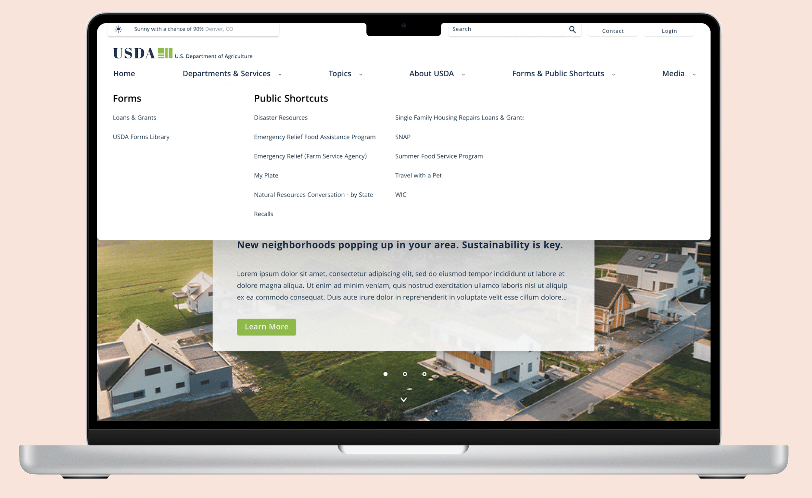

U.S. Department of Agriculture
Case Study: Homepage UI Redesign
Project Brief
Using user research usability testing methods to bring new life to the United States Department of Agriculture website.
Context
For the Univeristy of Denver UX/UI case study assignment. Choose a government website to redesign its user interface.

Team Memebers
Amanda Sahaida UX Researcher
Garrett Martin UX Researcher & UI Designer
My Role
After user testing was complete from the current USDA's current state was complete, my role shifted to visual design, interactive designer, and usuability testing.
Tools
Duration
3 Weeks
User Testing & Observations
Who's the Users?
We found that users for the USDA vary. A wide spectrum use the site for buisness needs; keeping up-to-date, submission forms, general and specific information. These business range any where from small local own restaurant to Whole Foods to food distribution entities.
The need for non-business purposes seem to be not as high. but it is still interesting to read the lastest information regrading agriculture and similar topics.
Restaurant owners, package designers, chefs, grocery stores and other markets, and other industry professionals.

User Tasks
Users were giving the tasks to open the USDA's website > find a specific form and perform general browsing. We specificly targeted the global navigation and forms given the high demand of usage.
Interview Transcipts
“I can see this being a great resource for small and large businesses. But it feels a little boring and confusing to use.”
“Bummed out about design but not surprised, “its a government website. Navigating is not awful, just a little up lift would do."”
“The UI could be “more colorful and exciting ... towards the bottom gets more lively.””
Information Architecture & Solutions
First understanding how their current site is layed out and opporates. From the user testing is was observed that if users did not specify exactly what to find in the search bar, it was much hard to local items. Clicking through each link became bothersome and frustrating.
Current USDA Navigation
Ensuring that the new navigation contains all the appropratie tabs and information is cruical. Here I anotated the current state of the site along with sub-menus, banenrs, etc. The nubers indicate what the user might see first.


Mood Board & Design
Ensuring that the new navigation contains all the appropratie tabs and information is cruical. Here I anotated the current state of the site along with sub-menus, banenrs, etc. The nubers indicate what the user might see first.

Problem
Users are not staying on the pages long enough before exiting. They experience frustration from find and submiting forms and find the overall aesthic outdated and boring.
Solutions
- developing a new global navigation to help reduce the amount of clicks to the desired location.
- design and adapt a new design system to help engage users.
Design System & New Navigation
First understanding how their current site is layed out and opporates. From the user testing is was observed that if users did not specify exactly what to find in the search bar, it was much hard to local items. Clicking through each link became bothersome and frustrating.
Design System
Purposing to Aparting a new design system for bring new life to the site while maintaining a professional "goverment feel."


Global Navigation
Purposing to Aparting a new design system for bring new life to the site while maintaining a professional "goverment feel."
Mood Board & Design
Ensuring that the new navigation contains all the appropratie tabs and information is cruical. Here I anotated the current state of the site along with sub-menus, banenrs, etc. The nubers indicate what the user might see first.
Problem
Users are not staying on the pages long enough before exiting. They experience frustration from find and submiting forms and find the overall aesthic outdated and boring.
Solutions
- developing a new global navigation to help reduce the amount of clicks to the desired location.
- design and adapt a new design system to help engage users.